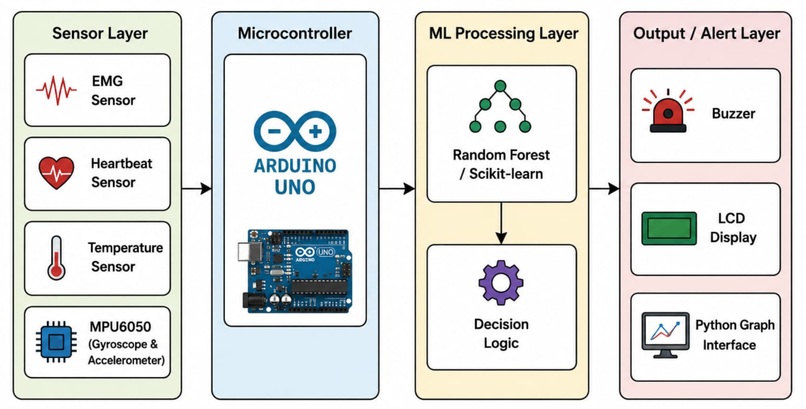
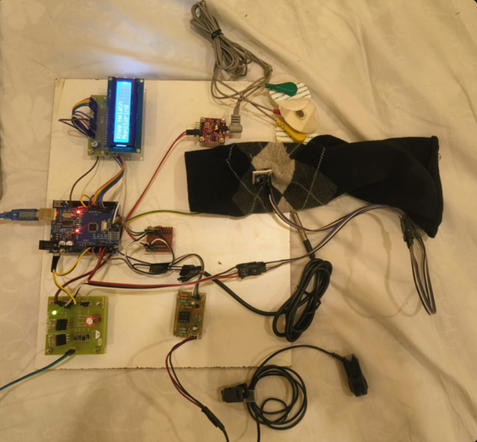
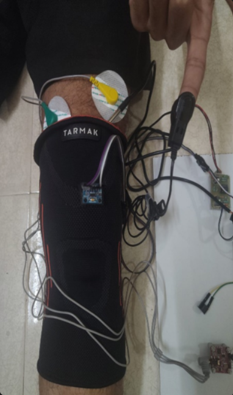
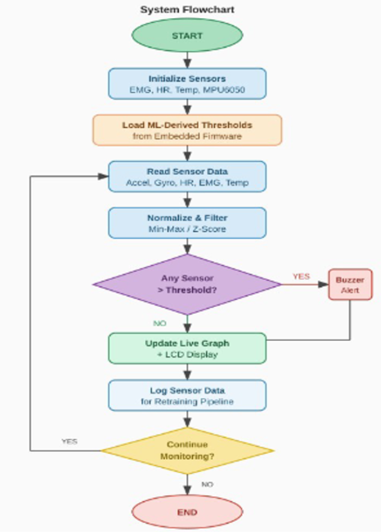
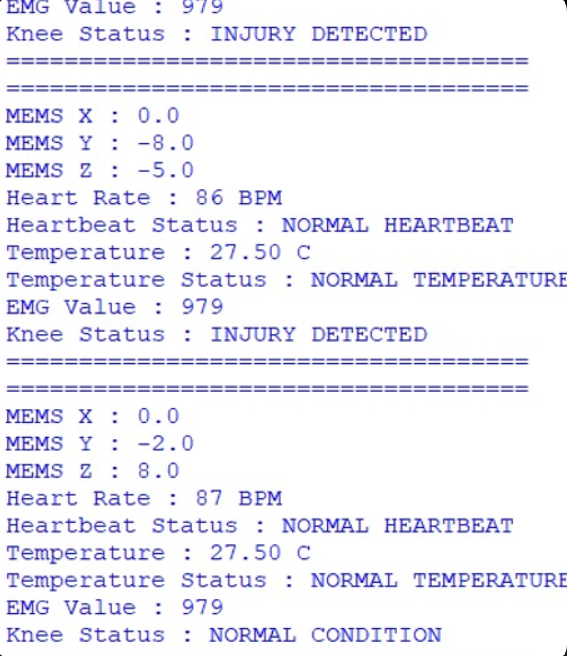
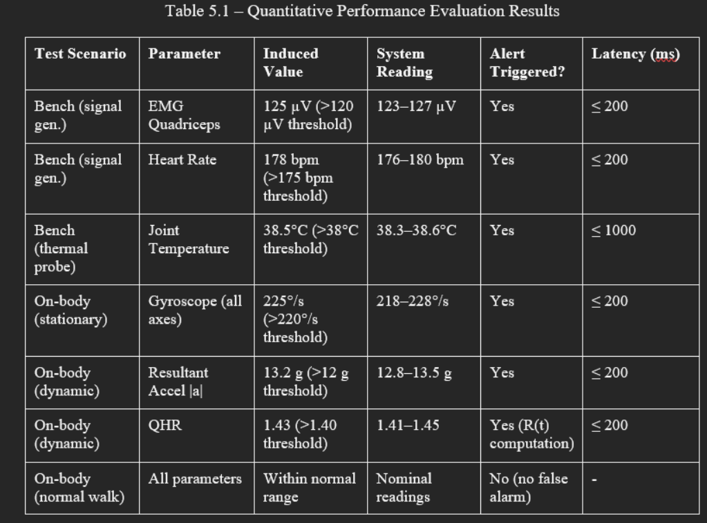
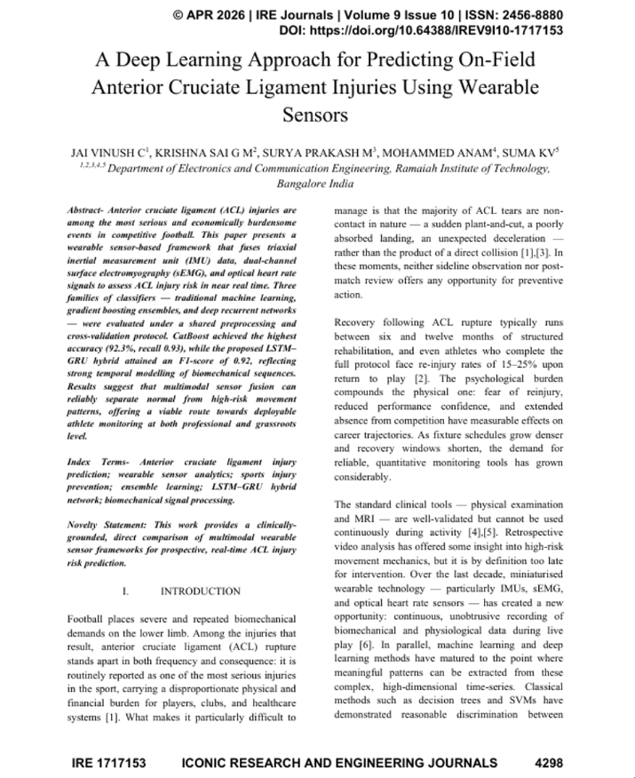

On-field constraints
Coaches and medical staff need warnings during drills and matches, where lab-grade motion capture is unavailable and decisions must happen in seconds.
Sports medicine + edge ML AND DL
A wearable knee-sock system that streams movement, impact, and fatigue signals into a predictive model for real-time ACL injury-risk alerts during play.
Problem statement
Coaches and medical staff need warnings during drills and matches, where lab-grade motion capture is unavailable and decisions must happen in seconds.
Sudden cutting, landing asymmetry, high knee valgus, tibial acceleration, and accumulating fatigue can combine into a short risk window.
The system estimates near-term ACL strain risk from time-series sensor data and classifies safe, caution, and intervention states.
Injury mechanism
The reference video shows how non-contact ACL injuries can occur during rapid movement changes.
System architecture
Low-profile modules capture acceleration, angular velocity, plantar pressure, and local muscle activation. Timestamp alignment keeps each movement phase comparable across athletes.


Wearable knee sock design
Tracks tibial acceleration, knee rotation velocity, landing shock, and deceleration spikes during cutting and jump landings.

Machine learning pipeline
Collect synchronized IMU, pressure, EMG, and fatigue markers at session level, with athlete metadata separated from model inputs for privacy-aware analysis.

Live dashboard
Monitors drill intensity and flags asymmetry when repeated cuts increase tibial rotation beyond personal baseline.

Results

Published paper

Volume 9 Issue 10
The publication anchors the prototype in a formal research contribution, covering wearable sensor fusion, classifier evaluation, and real-time ACL injury-risk prediction.
Open Published PaperApplications
Future scope
Improve generalization across teams without pooling identifiable athlete data.
Show which movement phase, joint angle, or fatigue marker triggered a high-risk forecast.
Connect alerts to warm-up changes, substitution guidance, and rehab plan adjustments.